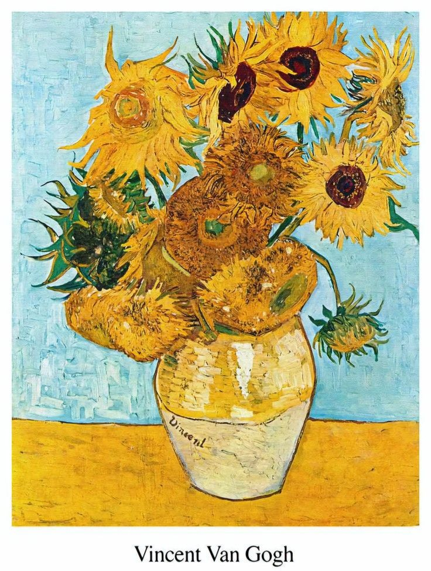

Sunflowers, 1888
“I dream my painting
and I paint my dream”
คลิกเพื่อ กลับไปหน้าหลัก

จากความชอบดอกทานตะวัน กลายเป็นเซ็ทภาพสีน้ำมัน ‘ทานตะวัน’ (Sunflowers) ซึ่งแวน โก๊ะวาดขึ้น 2 ชุด ชุดแรก คือ ‘The Paris sunflowers’
ถูกวาดในปีค.ศ.1886-1888 ที่กรุงปารีส ประเทศฝรั่งเศส เป็นภาพของดอกทานตะวันแซมกับดอกไม้ชนิดอื่นในกระถาง ชื่อว่า ‘Roses and Sunflowers’
ต่อมาในปีค.ศ. 1887 แวน โก๊ะเริ่มวาดรูปดอกทานตะวันที่แยกออกจากดอกไม้อื่น ซึ่งเป็นดอกทานตะวันที่ตัดช่อแล้ว และวางอยู่บนพื้น จำนวน 4 ภาพ และตั้งชื่อเป็นภาษาฝรั่งเศสว่า ‘Tournesols’